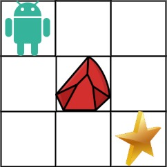

LeetCode 63 不同路径 II
一个机器人位于一个 m x n 网格的左上角 （起始点在下图中标记为 “Start” ）。
机器人每次只能向下或者向右移动一步。机器人试图达到网格的右下角（在下图中标记为 “Finish”）。
现在考虑网格中有障碍物。那么从左上角到右下角将会有多少条不同的路径？
网格中的障碍物和空位置分别用 1 和 0 来表示。

动态规划
此处相较于62.不同路径的不同之处在于网格中存在障碍物，那么在进行动态规划数组的推导时，将会存在不同之处，也对网格中值为 0 的元素，依旧就是可以从上方和左方到达： dp[i][j]=dp[i-1][j]+dp[i][j-1] ，对于网格中值为 1 的位置应该将其置为不可达的状态： dp[i][j]=0 。相应的，动态规划数组在初始化是也存在不同。
确定动态规划数组：
dp[i][j]表示从起点[0][0]到达[i][j]存在的路径数。动态规划数组的推导方式： 首先判断
obstacleGrid[i][j]==0?若是成立，那么dp[i][j]=dp[i-1][j]+dp[i][j-1]，不成立那么dp[i][j]=0。动态规划数组的初始化：依旧是对第一行和第一列进行初始化，在第一行中
dp[0][0]=1接下来判断obstacleGrid[0][j]==0?，若是成立，那么dp[0][j]=1，否则dp[0][j]=0并且后续的dp[0][j]也全部为0。对于第一列的初始化：判断obstacleGrid[i][0]==0?，若是成立，那么dp[i][0]=1，否则dp[i][0]=0并且后续的dp[i][0]也全部初始化为0。数组的遍历顺序：采取从前向后，逐行遍历的方式
举例验证：
obstacleGrid = [[0,1],[0,0]]那么初始为dp[0][0]=1,dp[0][1]=0,dp[1][0]=1计算dp[1][1]=dp[0][1]+dp[1][0]=1验证正确
1 | class Solution { |
使用一维数组进行优化：依旧是使用一个一维数组作为行信息的记录，对于这个一维数组可以这样理解：对于 dp[i-1] 他所记录的是当前位置上方存在的路径， dp[i] 在更新之前所记录的是当前位置左方存在的路径，在更新之后记录的就是当前位置。此处就是在得到了第一行的信息之后去计算第二行的值。相较于62.不同路径仅仅在于需要考虑障碍物问题。
1 | class Solution { |